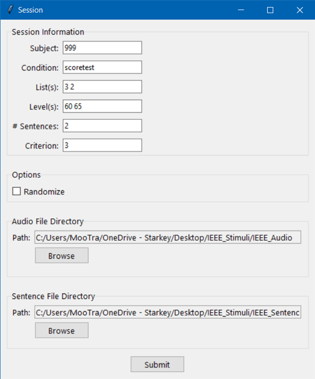
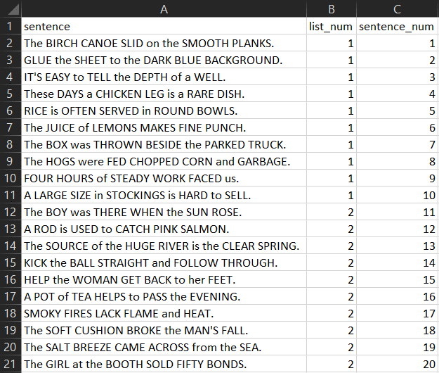
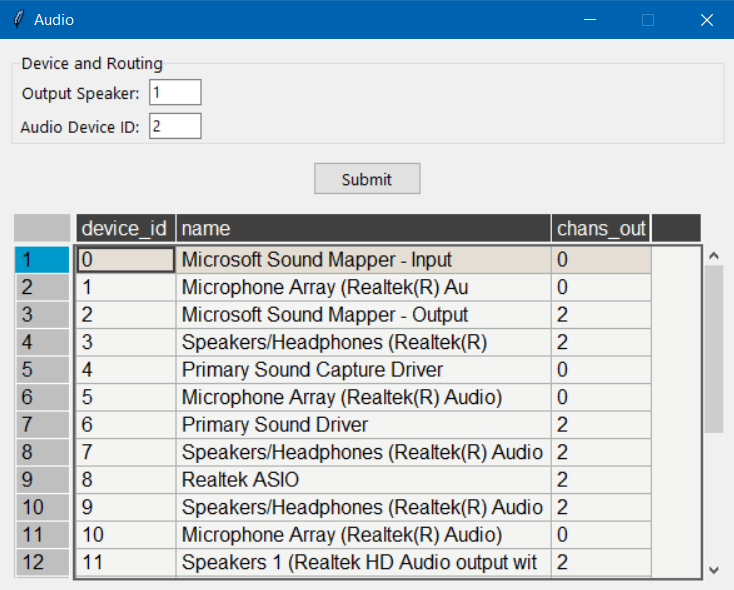
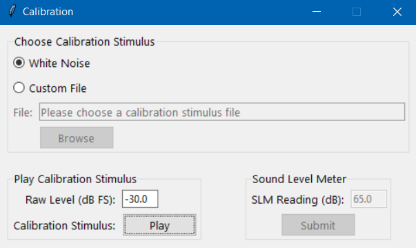
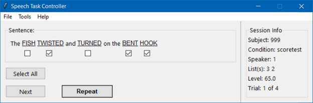
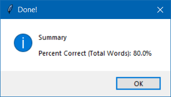

Speech Task Controller: MOCS
Graphical user interface (GUI) for presenting and scoring speech tasks using the method of constant stimuli.
- Written by: Travis M. Moore
- Latest version: Version 0.0.1 BETA
- Last edited: January 17, 2023
Description
-
This GUI was developed to provide an easy method for presenting speech tasks
using multiple presentation levels, without having to recalibrate each time the level changes.
-
This GUI also offers point-and-click scoring and provides session
data at the end in .csv format. This avoids data entry errors (e.g., transferring
paper scores into a spreadsheet), as well as provides a common format for storing
scores (e.g., for use with automated data entry scripts).
Getting Started
Dependencies
- Windows 10 or greater (not compatible with Mac OS)
Installing
- This is a compiled app; the executable file is stored on Starfile at: \starfile\Public\Temp\MooreT\Custom Software
- Simply copy the executable file and paste to a location on the local machine
- Double click to start the app
First Use
- Double-click to start the application for the first time.
- Go to File-->Session to provide file paths to stimulus files, as
well as enter session information
- Go to Tools-->Audio Settings to enter a valid audio device ID.
- Go to Tools-->Calibration to calibrate using a sound level meter.
- Click the START button on the main screen to begin.
Session Details
The Speech Task Controller requires several pieces of session information. Navigate to File-->Session to open the Session window (see image below).

Session Information
The first section of the Session window asks for the following information:
- Subject: The participant ID number. Can be alphanumeric.
- Condition: A custom name for the current condition. Use underscores to add additional descriptors. For example:
quiet_highpass_unaided.
- List(s): Specify the list you would like to present from the speech test/corpus. Enter additional list numbers separated by spaces to present multiple lists. For example:
1 2 5. Lists do not have to be in sequential order.
- Level(s): Enter the desired presentation level, using up to one decimal place. For example:
65.5. Add additional presentation levels separated by a space. NOTE: Enter a single presentation level to be used with multiple lists, or provide an equal number of lists and levels.
- Stim/List: The number of sentences to be used from each list. This is useful if you want to do a truncated run for practice.
- Criterion: The minimum number of keywords that must be correctly identified in order to mark the trial correct.
Options
- Randomize: Select this option if you would like to present randomly across lists/levels. NOTE: Each list is assigned a consistent level (to keep the level same for each sentence from a given list). Randomization simply pulls a sentence from any available list, where lists may be assigned different levels (if provided).
Stimulus Directories
Provide the Speech Task Controller with the file paths to your stimuli.
- Click the BROWSE button in the "Audio File Directory" section and navigate to the folder containing your audio files.
- Click the BROWSE button in the "Sentence File Directory" section and navigate to the folder containing your .csv file of sentence text.
Stimulus Requirements
Audio Files
- All audio files must be in .wav format.
- Each sentence from the speech task/corpus must exist in its own .wav file.
That is, if there are 500 sentences you wish to use from a particular corpus,
there should be 500 .wav files in the audio directory.
- Audio files should be named using integers. Example:
1.wav, 2.wav, 3.wav.
Sentence List
- A single list of sentences must be provided in .csv format.
- The sentence list should contain 3 columns
- sentence: each sentence in its own row
- list_num: the list each sentence belongs to
- sentence_num: integer identifiers, starting at 1.
NOTE: sentence_num values must correspond to the audio file names!
- Any key words must be CAPITALIZED in the list of sentences: the Speech Task Controller identifies key words based on capitalization.

Channel Routing and Audio Device Selection
The Speech Task Controller has audio routing capability thanks to the sounddevice Python library. Navigate to Tools-->Audio Settings to open the Audio Settings window to assign an audio channel and device (see image below).

Choose a Speaker
The Speech Task Controller is able to route a single channel of audio to a
specified speaker. Simply type the speaker number in the "Output Speaker"
text entry box.
NOTE: The speaker number refers to the channel assigned to a speaker by the soundcard. Check the speaker routing to identify its number.
Choose an Audio Device
The Audio Settings window will display a list of available audio devices in
tabular format.
- Use the "name" column to find the desired audio device (often
the Hammerfall ASIO device in the clinical research labs).
- Ensure that the number of channels out in the "chans_out" column is not 0,
and is sufficient for the desired number of audio channels/speakers. For example, to present audio from speaker 5, there must be at least 5 channels in the "chans_out" column.
- After you have identified the appropriate audio device, enter its ID number
from the "device_id" column into the "Audio Device ID" text entry box.
- Finally, click the SUBMIT button to save your selections.
Calibration
Before actual use in an experiment, the Speech Task Controller must be calibrated using a sound level meter (SLM). Use the menu to navigate to Tools-->Calibration to open the calibration window (see image below).

Choose Calibration Stimulus
There are two options when calibrating.
- The Speech Task Controller contains its own white noise stimulus for general calibration. Select the "White Noise" button to use this stimulus.
- The "Custom File" button allows for an existing calibration file to be loaded. For example, to present IEEE sentences, load in the IEEE calibration file.
Play Calibration Stimulus
Clicking the PLAY button will present the calibration stimulus. You can set the level of the calibration stimulus using the "Raw Level (dB FS)" text entry box. A level of -30 dB FS is relatively safe, and is the default value. Making the Raw Level more negative will decrease the presentation level. Making the Raw Level more positive will increase the presentation level. It is not recommended to make this level more positive to avoid damaging the speakers.
Sound Level Meter
After you have loaded a calibration file and set up the SLM, press the PLAY button (Note: Make sure you have the SLM set to the proper speed and weighting [e.g., slow, dBA]). Enter the value from the SLM into the "SLM Reading (dB)" text entry box. Click the SUBMIT button to save the SLM value.
Presentation Levels
The Speech Task Controller can present audio at a single or multiple levels, depending on the number of lists.
Presenting at a Single Level
- To present a single list at a single level, simply enter one list number and one level.
- To present multiple lists at a single level, simply enter multiple list numbers and a single level
Presenting at Multiple Levels
- You cannot present a single list at multiple levels
- To present at multiple levels, you must provide an equal number of lists and levels
- To present several lists at the same level, and several lists at a different level, simply add another instance of that level. For example: to present lists 1 and 2 at 60 dB and lists 3 and 4 at 70 dB, enter
1 2 3 4 in the List(s) textbox, and 60 60 70 70 in the Level(s) textbox.
Scoring
Sentences will be presented one-by-one from the list(s) entered in the Session window. The sentence text will be displayed in the "Sentence" section of the main screen. Check boxes will appear beneath each key word in the sentence. Click the check box if the participant correctly identified the word, otherwise leave the checkbox blank.
As a convenience, you can click the SELECT ALL button to select every checkbox automatically.
If you need to repeat the audio presentation of the current sentence, you can click the REPEAT button to present the audio again, without scoring or increasing the trial number.
After selecting the appropriate check boxes, click the NEXT button to record the current trial and begin the next trial.

Sentence-Level Scoring
Scoring occurs automatically based on the criterion you entered in the Session window (e.g., a minimum of 3 keywords must be correctly identified in order to score the trial as correct). This information is stored per trial in the "Outcome" column of the output .csv file.
Word-Level Scoring
The Speech Task Controller also tracks the percent correct based on the overall number of correctly identified keywords. For convenience, this score is provided in a message box at the end of the task labeled Percent Correct (Total Words). Word-level data are also stored on a per trial basis in the output .csv file (see the Data Output section for more details).

Data Output
Each time you click the NEXT button, session data are written as a new line to the data .csv file. This file serves as a record of the session and can be used to calculate scores for later analysis. The file appears in the same directory as the Speech Task Controller app, with a naming convention of: subject_condition_year_month_day_time.csv. This ensures previous records are not overridden, even if you need to repeat the same condition.
The data .csv file stores the following information on each trial:
- Subject: taken from the Session window
- Condition: taken from the Session window
- List Number: all lists entered in the Session window
- Presentation Level: all levels entered in the Session window
- sentences_per_list: the number of sentences to present from each list. Taken from the Session window
- score_criterion: the minimum number of keywords identified correctly to score the trial as correct. Taken from the Session window.
- randomize: either a 1 (randomized)
- raw_lvl: hard-coded starting level in dB FS
- slm_cal_val: the SLM value entered in the Calibration window
- slm_offset: calculated as
SLM Calibration Value - Raw Level
- new_raw_lvl: calculated as
new_db_lvl - slm_offset
- new_db_lvl: calculated on each trial using values in the "Step (dB)" text entry boxes on the main screen
- Words Correct: a space-separated list of the words marked correct
- Num Words Correct: the number of words marked correct
- Words Incorrect: a space-separated list of the words marked incorrect
- Outcome: a
1 or 0 (right/wrong, respectively), based on whether the scoring criterion was met
- Trial: a counter starting at 1 and increasing with each presentation
Compiling from Source
pyinstaller --noconfirm --onefile --windowed --add-data "C:/Users/MooTra/Code/Python/speech_task_gui/assets/cal_stim.wav;." --add-data "C:/Users/MooTra/Code/Python/speech_task_gui/assets/README;README/" "C:/Users/MooTra/Code/Python/speech_task_gui/controller.py"
Contact
Please use the contact information below to submit bug reports, feature requests and any other feedback. Thank you for using the Speech Task Controller!
- Travis M. Moore: travis_moore@starkey.com